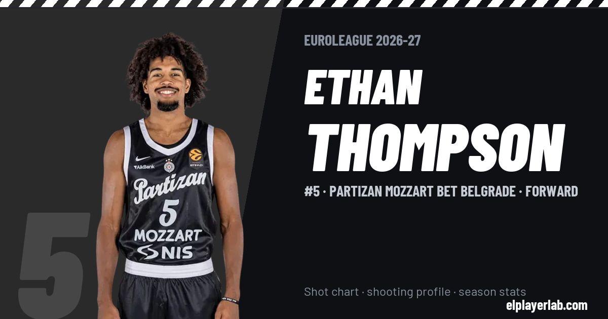

Partizan Mozzart Bet Belgrade · Euroleague 2026-27
Ethan Thompson
#5 · Forward · Partizan Mozzart Bet Belgrade · 2026-27 · 4 games · 6.2 pts · 3.0 reb · 1.2 ast a game

- Number
- 5
- Position
- Forward
- Height
- 193 cm
- Weight
- 88 kg
- Born
- 1999-05-04
- Country
- United States of America
Career
- Partizan 2026-2027
- Noblesville Boom (loan) 2025-2026
- Indiana Pacers (NBA) 2025-2026
- Sioux Falls Skyforce 2025
- Osceola Magic 2024-2025
- Osos de Manatí 2024
- Mexico City Capitanes 2023-2024
- Windy City Bulls 2021-2023
- Oregon State (NCAA) 2017-2021
Euroleague Player Lab: shot charts, shooting profiles and season stats for every player, rebuilt after every game.